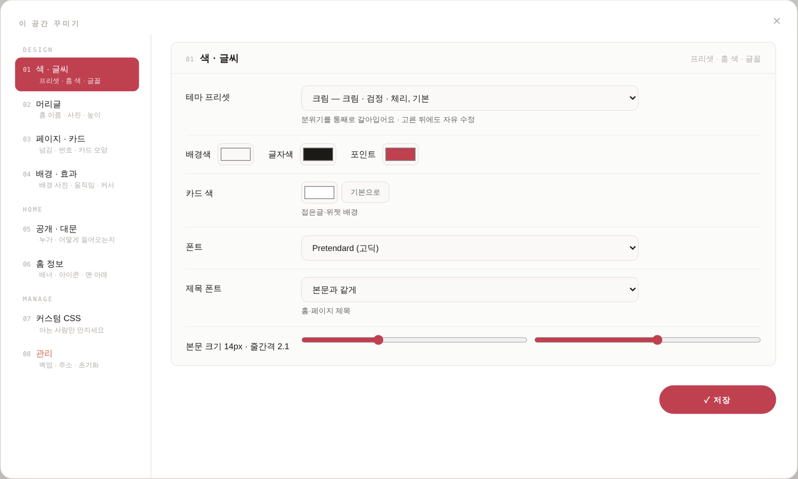
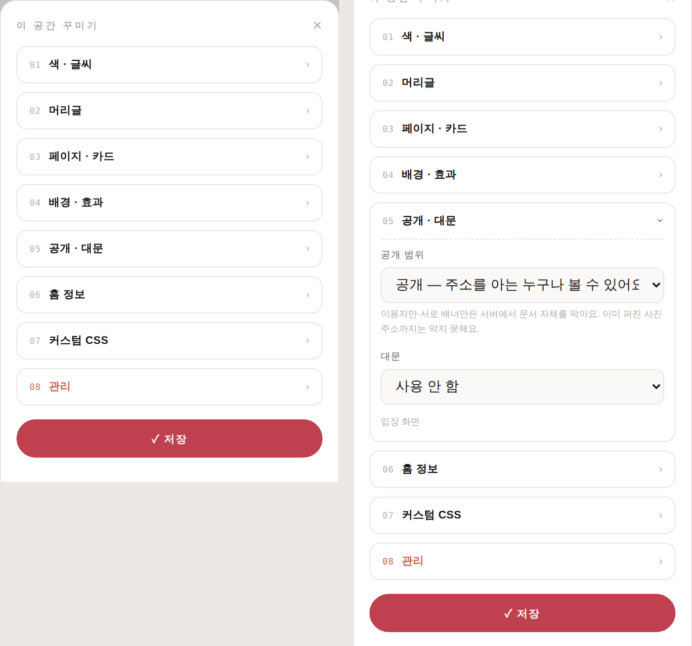
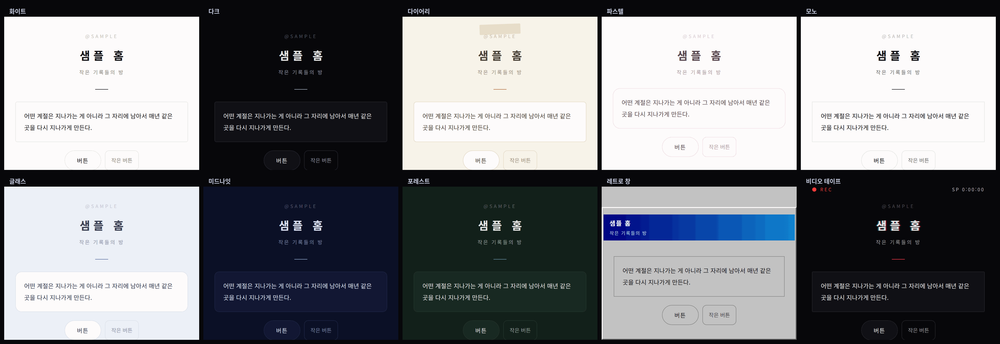
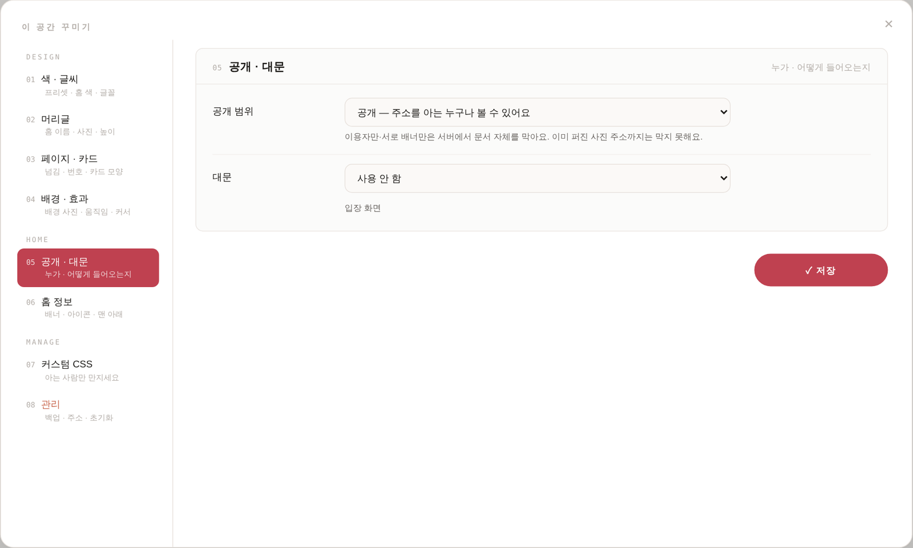

러브인포 · 꾸미기
꾸미기
편집 모드 하단 바의 🎨 꾸미기. 설정은 01~08 여덟 묶음으로 나뉘어 있고, PC와 폰에서 번호와 자리가 같습니다.
화면
- PC(창 폭 1000px 이상) — 넓은 창이 열립니다. 왼쪽 목록에서 묶음을 고르고 오른쪽에서 조절, ✓ 저장은 오른쪽 아래.
- 폰 — 01~08 줄을 눌러 펼치는 목록. 맨 아래 ✓ 저장.
- 바꾼 값은 홈에 바로 미리 보이고, ✓ 저장을 눌러야 서버에 남습니다.

사진 자리img/li-design.png
사진 자리img/li-design-mobile.png묶음
- 01 색 · 글씨
- 테마 프리셋 10종 · 배경색 · 글자색 · 포인트 · 카드 색(접은글 · 위젯 배경) · 폰트 · 제목 폰트 · 본문 크기/줄간격.
- 02 머리글
- 구성(글 / 이미지+글 / 이미지만 / 없음) · 밑줄 장식(—) · 머리 위 작은 글씨 · 홈 이름 · 부제 · 머리글 이미지(1200×400 비율 권장, 위치 · 확대 · 높이) · 내용 세로 위치. 이미지 없는 자리는 방문자에게 안 보입니다.
- 03 페이지 · 카드
- 페이지 넘김 · 넘김 모양 · 페이지 전환 · 페이지 번호(01) · 페이지 제목 디자인 5종 · 카드 모서리 · 테두리(점선 · 이중선 · 그림자 · 장식) · 안 여백 · 투명도. 카드는 블록마다 개별 지정도 가능(이 블록 디자인). 페이지 참고.
- 04 배경 · 효과
- 배경 이미지 + 덮는 정도(0~96%), 배경 효과(눈 · 별 · 꽃잎 · 노이즈 · 비네팅), 커서 효과(별 꼬리 · 반짝임 · 원 · 물방울).
- 05 공개 · 대문
- 공개 범위와 대문(입장 화면). 아래 공개 범위, 대문은 대문 참고.
- 06 홈 정보
- 내 배너(다른 러브인포에 걸리는 이미지 · 220×60) · 파비콘(탭 아이콘) · 앱 아이콘(폰 「홈 화면에 추가」) · 맨 아래 표시(하트 · 링크 복사 · 가이드 · 문의 · 날짜 · 방문자 수 — 방문자 수는 기본 꺼짐) · 맨 아래 문구 · 내 러브로그 홈 연결 · 러브로그에서 가져오기(색 · 포인트색 · 카드 색 · 모서리 · 폰트 · 머리글 이미지/제목 — 위젯 · 커서 등은 대상 아님).
- 07 커스텀 CSS
- 아는 사람용. 화면이 깨지면 주소 뒤에
?nocss=1을 붙여 들어와 지우세요. - 08 관리
- 백업 · 이사 · 홈 주소 변경 · 홈 초기화 · 삭제. 백업·이사 참고.

사진 자리img/li-presets.png공개 범위
- 공개
- 주소를 아는 누구나 볼 수 있습니다.
- 러브인포 이용자만
- 러브인포 홈이 있는 계정으로 로그인해야 보입니다. 구글 로그인만 하고 홈이 없는 계정은 볼 수 없습니다.
- 서로 배너만
- 내 배너 블록에 있고, 그쪽 배너 블록에도 내가 있는 홈의 주인만 볼 수 있습니다. 양쪽 모두 한 번 ✓ 저장한 뒤부터 정확히 동작합니다.
- 비공개
- 나에게만 보이고, 방문자에게는 「존재하지 않는 페이지」로 보입니다.

사진 자리img/li-design-05.png